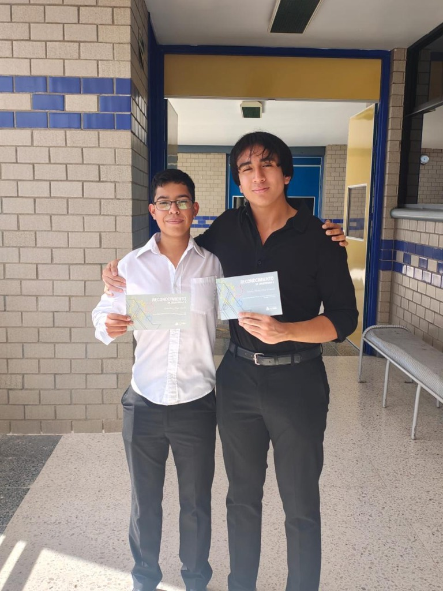
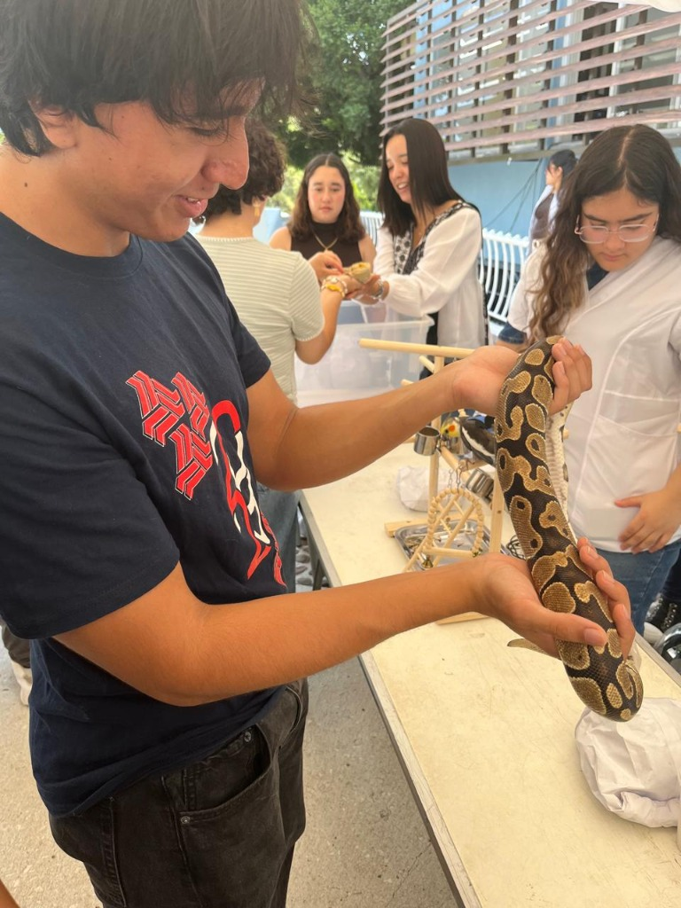
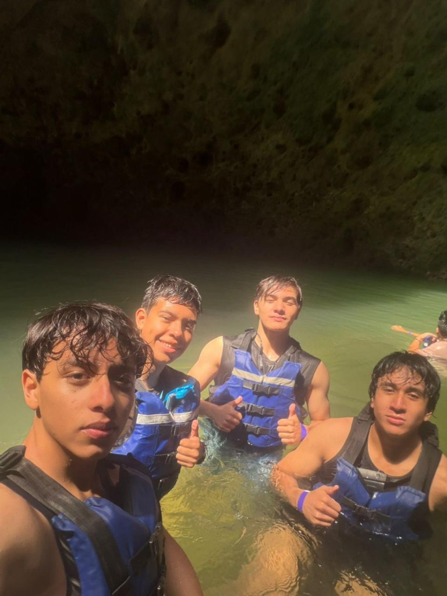
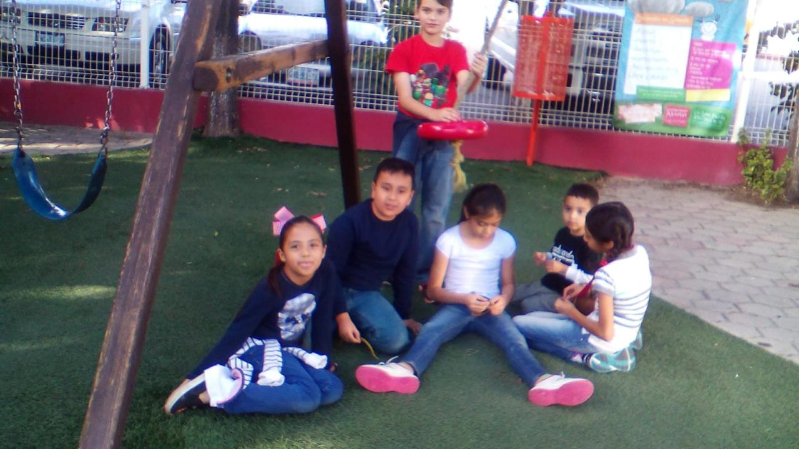
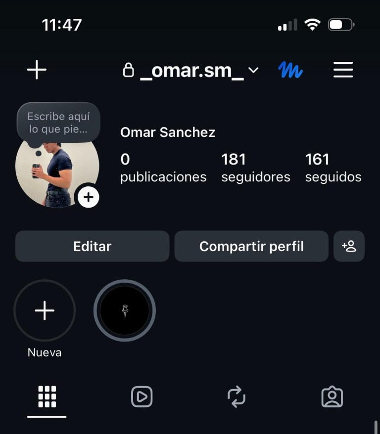
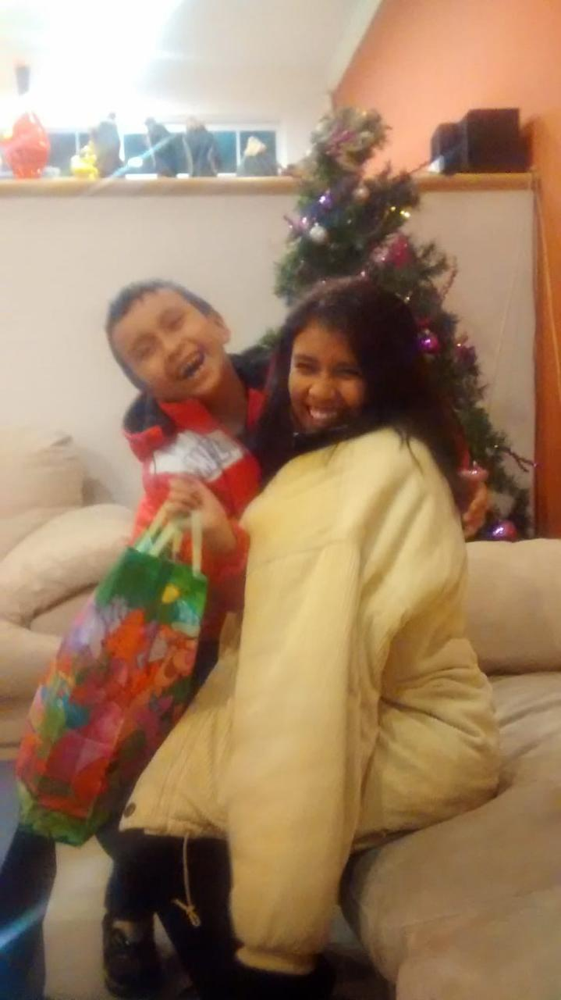
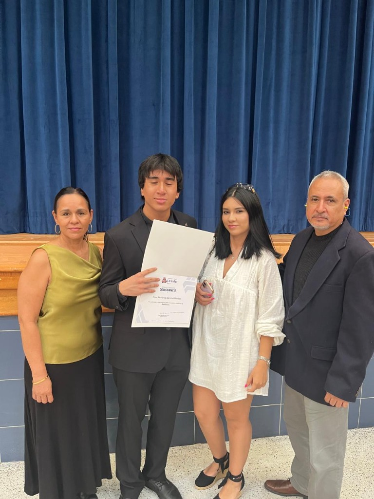
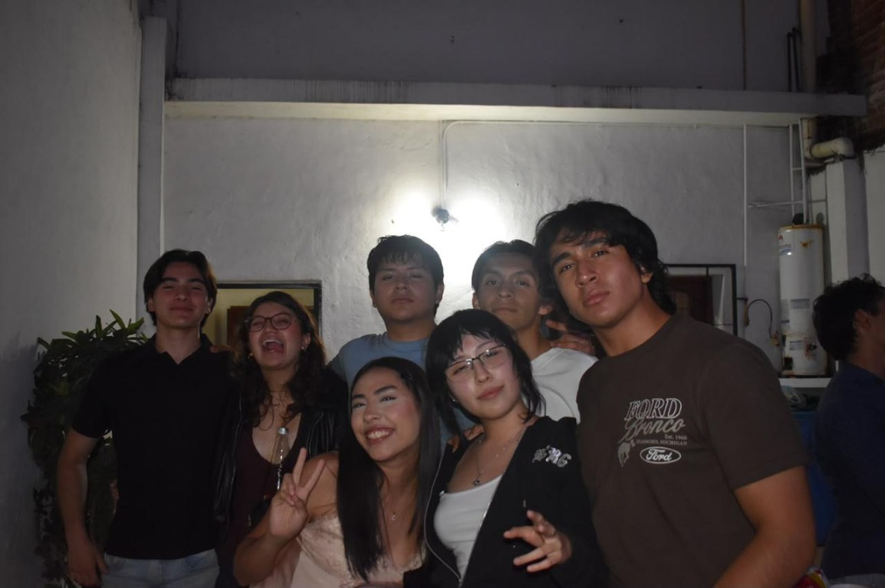
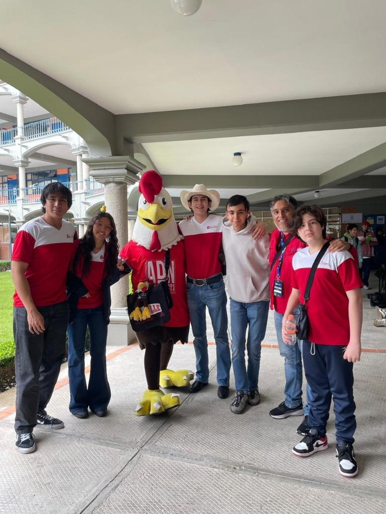
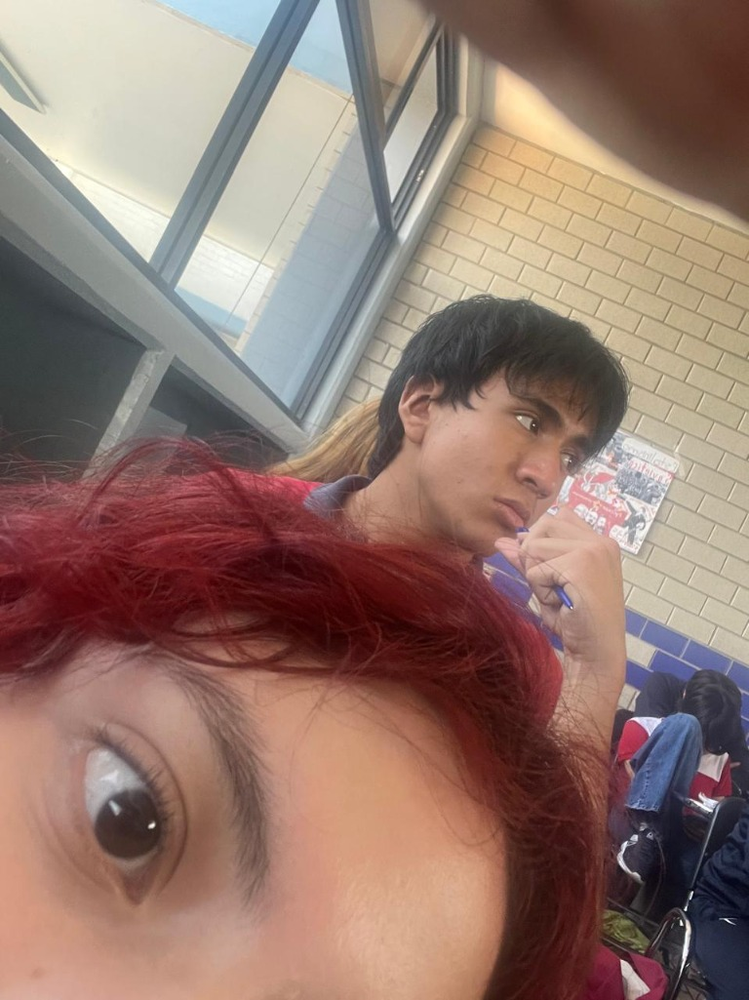

Soy un estudiante de universidad próximo a ser un ingeniero en inteligencia artificial y desarrollo de software que creará soluciones para empresas grandes y pequeña ademas de diseñar productos que hagan los procesos más eficientes.

VOL. 01 / IDENTIDAD PERSONAL
Un espacio para contar quién soy, qué hago y hacia dónde voy.
Soy un estudiante de universidad próximo a ser un ingeniero en inteligencia artificial y desarrollo de software que creará soluciones para empresas grandes y pequeña ademas de diseñar productos que hagan los procesos más eficientes.

Soy una persona curiosa, reservada y me gusta mas escuchar y aprender de otras personas antes que hablar de mi mismo, me gusta mantener mi circulo social lleno de personas que realmente valgan la pena, si demuestras que eres una persona leal y honesta te devolvere el favor siendo un gran amigo para ti.

Desde pequeño tuve problemas para mantener un estilo de vida activo por diferentes condiciones que no me permiten respirar de forma correcta y eso me trajo diferentes problemas, entre ellos la obesidad, pero gracias a mi mama encontre actividades fisicas que realmente disfruto como la natación y el gimnasio, no me consideraria una persona activa ya que ademas de eso no me suelo mover mucho, no suelo salir a caminar por ejemplo, pero siempre intento no ser sedentario.

Siempre me he sentido como una persona algunos años mayor a mi edad real, generalmete se me hace mas facil llevarme con adulto que con gente de mi edad.

No suelo compartir mucho de mi vida en redes sociales, las tengo para hablar con amigos y tener mas contacto con ellos pero no para mucho mas.

Me rodeo de personas que me escuchan, me apoyan y me inspiran. Valoro compartir ideas y construir relaciones basadas en el respeto, la confianza y la colaboración.

Mi seguridad crece cuando reconozco mis fortalezas, acepto lo que todavía estoy aprendiendo y actúo con autenticidad. Confío en mis ideas y en mi capacidad para convertirlas en proyectos.

Me siento más cómodo/a con prendas que reflejan mi personalidad y me permiten expresarme con naturalidad. Elijo mi estilo pensando en cómo quiero sentirme y presentarme.

En situaciones sociales procuro actuar con respeto y consideración, adaptándome al contexto sin dejar de ser auténtico/a. Para mí, los buenos modales ayudan a crear conversaciones y vínculos agradables.

A veces mis inseguridades pueden limitarme, pero reconocerlas me ayuda a comprenderme y a no dejar que definan quién soy. Avanzo con paciencia, enfocándome en mis cualidades, mis metas y lo que puedo aprender.
